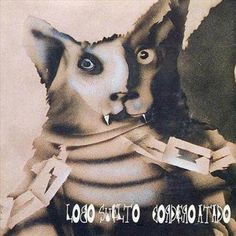
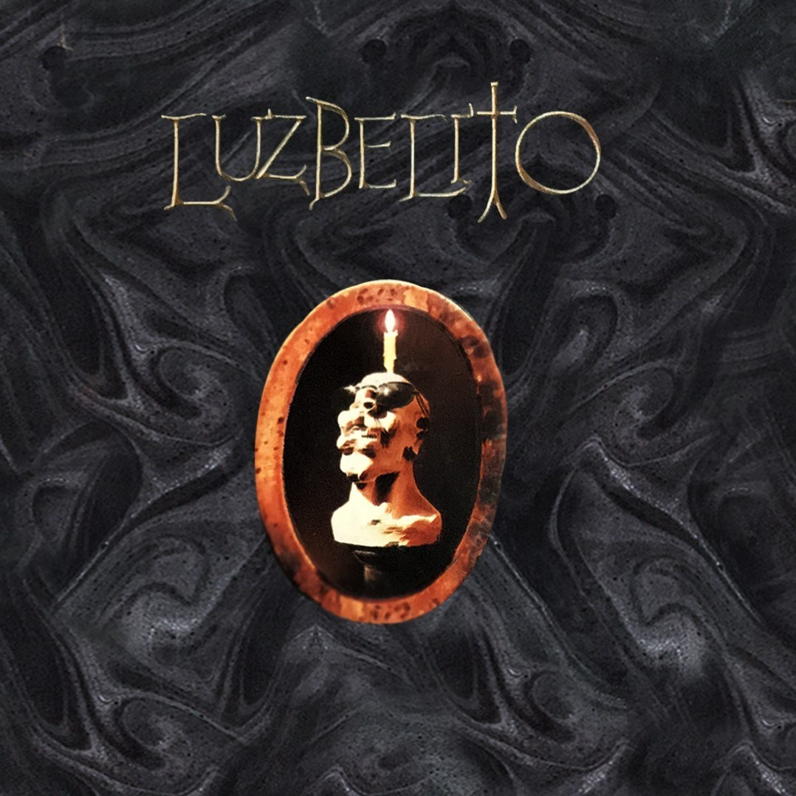
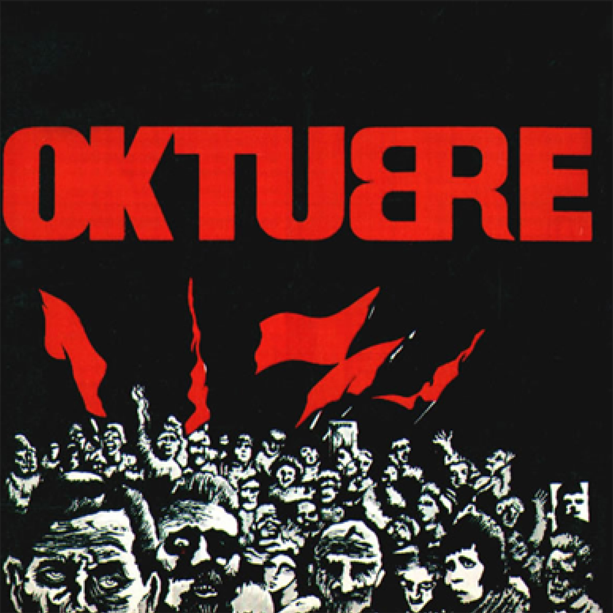
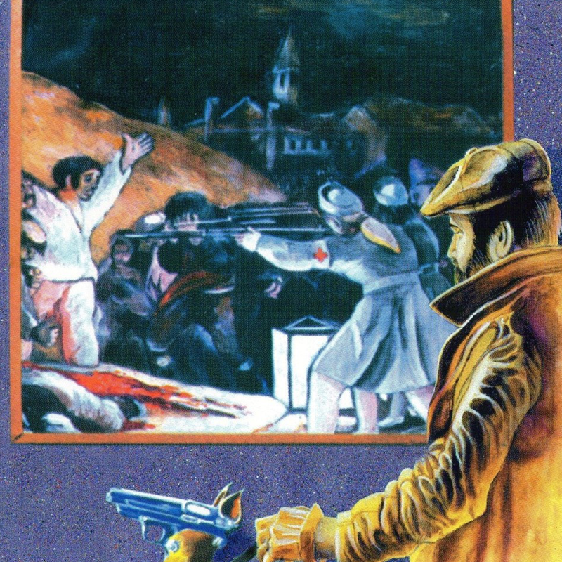
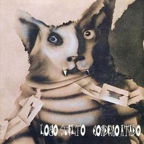
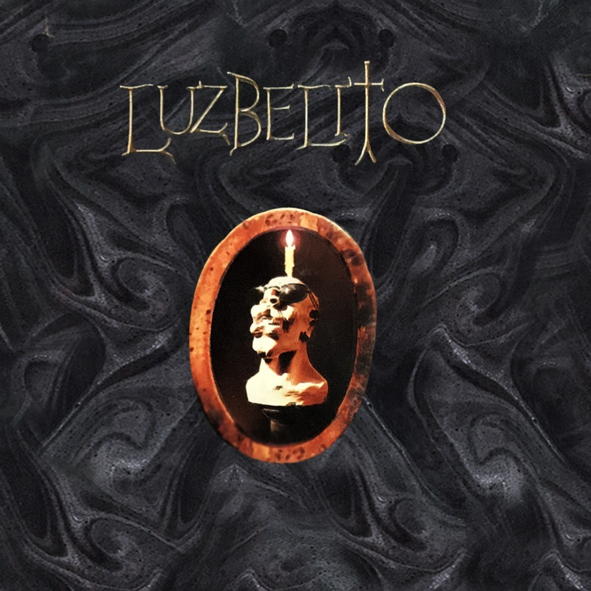
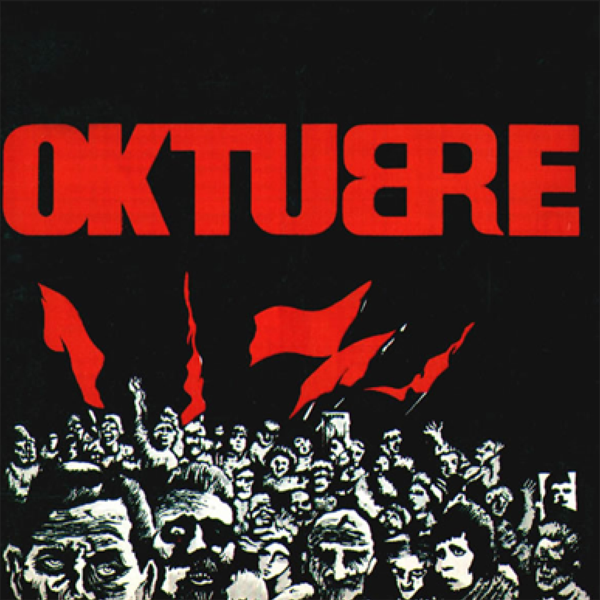
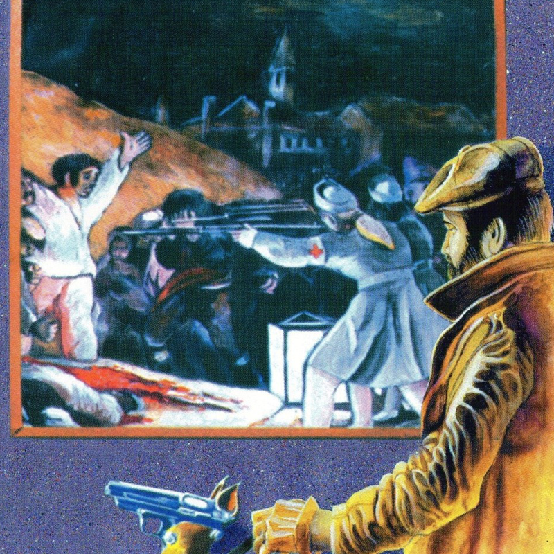

Historia
Patricio Rey y sus Redonditos de Ricota, también conocidos como Los Redondos, fue una banda de rock de La Plata, Argentina, que está considerada como una de las bandas más importantes e influyentes de Argentina. La banda se formó en 19761 y, aunque a lo largo de su historia contó en sus filas con varios integrantes, siempre tuvo como líderes centrales al Indio Solari (cantante), Skay Beilinson (guitarrista), la Negra Poli (mánager) y Rocambole Cohen (diseñador gráfico).
Alcanzaron una gran popularidad dentro del rock argentino manteniéndose como una banda independiente sin recurrir al apoyo de compañías discográficas. A medida que su popularidad aumentaba, se fueron convirtiendo en un símbolo contracultural y en un paradigma de la independencia artística. Los primeros recitales fueron promovidos por el "boca en boca", con el pasar de los años, los métodos de comunicación de la banda fueron cambiando, pero siempre sin recurrir a canales de televisión ni grandes medios de prensa.
 






